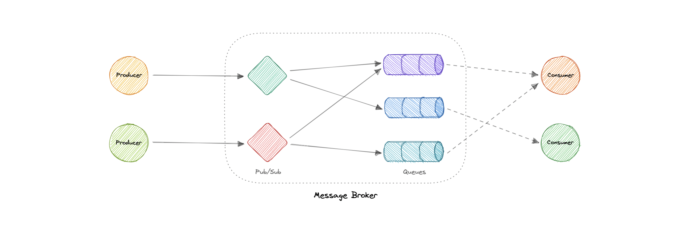
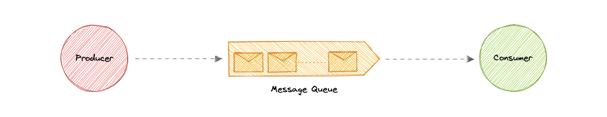
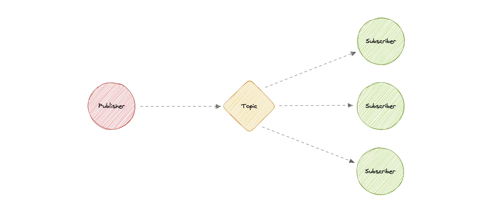
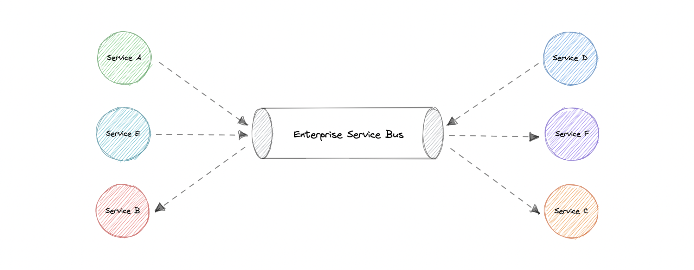
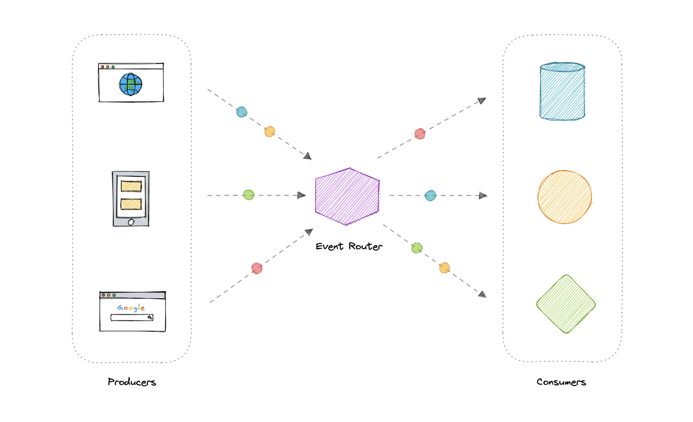
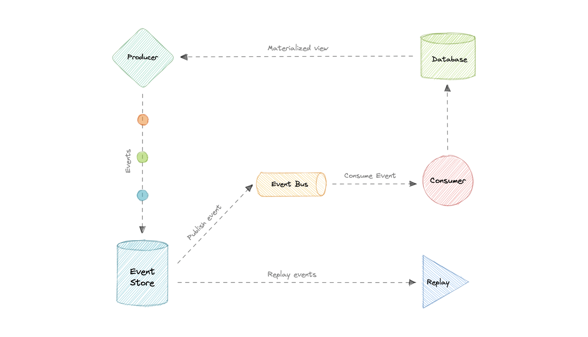
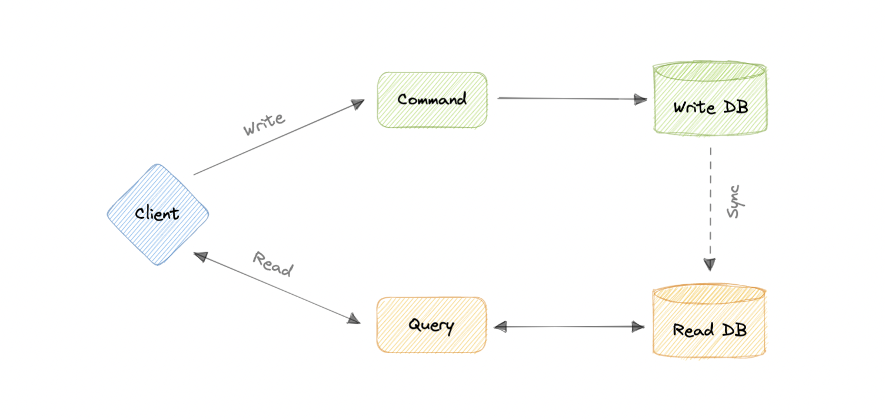

Messaging bất đồng bộ
Cách các service giao tiếp gián tiếp & bất đồng bộ để decouple: Message Brokers, Queues, Pub/Sub, ESB, và các pattern EDA, Event Sourcing, CQRS.
Message Brokers
Phần mềm trung gian cho phép các ứng dụng/service giao tiếp & trao đổi thông tin — dịch message giữa các giao thức. Sender gửi mà không cần biết receiver ở đâu, còn sống không, hay có bao nhiêu → giúp decoupling.
Hai mô hình phân phối: Point-to-Point (one-to-one, dùng trong message queue) và Publish-Subscribe (one-to-many). Ví dụ: Kafka, RabbitMQ, NATS, ActiveMQ.

Message Queues
Giao tiếp bất đồng bộ service-to-service. Message lưu trong queue đến khi được xử lý & xóa — mỗi message chỉ xử lý một lần bởi một consumer.

Ưu điểm: Scalability, Decoupling, Performance (bất đồng bộ), Reliability (persistent).
Tính năng quan trọng: Push/Pull delivery, FIFO, scheduled/delay, at-least-once / exactly-once delivery, Dead-letter queue (chứa message không xử lý được), ordering best-effort, security.
Nếu queue phình quá lớn vượt bộ nhớ → chậm. Backpressure giới hạn kích thước queue; khi đầy, client nhận "server busy" / HTTP 503 để thử lại sau (dùng exponential backoff). Ví dụ: Amazon SQS, RabbitMQ.
Publish-Subscribe (Pub/Sub)
Khác queue: message publish lên một topic sẽ được đẩy (push) ngay tới TẤT CẢ subscriber của topic. Mỗi subscriber làm việc khác nhau với message, song song.

Ưu điểm: bỏ polling (push tức thì), dynamic targeting, decoupled & scale độc lập, đơn giản hóa giao tiếp. Tính năng: push delivery, multiple protocols, fanout, filtering, durability, security. Ví dụ: Amazon SNS, Google Pub/Sub.
Enterprise Service Bus (ESB)
Mẫu kiến trúc cũ với một component tập trung lo tích hợp giữa các ứng dụng. Nhược: single point of failure, cấu hình & bảo trì phức tạp, update dễ ảnh hưởng integration khác. → Message broker là giải pháp nhẹ hơn, phù hợp microservices hơn ESB.

Event-Driven Architecture (EDA)
Dùng event làm phương thức giao tiếp, thường qua message broker, publish/consume bất đồng bộ. Một event là data point biểu diễn thay đổi trạng thái — không ra lệnh phải làm gì, chỉ thông báo "đã có gì xảy ra".
3 thành phần: Event producers → Event routers → Event consumers. Ưu: decouple producer/consumer, scale tốt, dễ thêm consumer. Thách thức: đảm bảo delivery, xử lý lỗi, exactly-once & đúng thứ tự.

Event Sourcing
Thay vì chỉ lưu trạng thái hiện tại, dùng kho append-only ghi lại toàn bộ chuỗi hành động. Kho event là "system of record"; trạng thái được tái dựng (materialize) từ các event.
EDA dùng event để giao tiếp giữa các service. Event Sourcing dùng event làm cách lưu trữ state (lưu event thay vì current state). Event Sourcing là một pattern để triển khai EDA. Ưu: tuyệt cho audit log, fail-safety (tái dựng từ event), linh hoạt.

CQRS (Command Query Responsibility Segregation)
Tách hành động hệ thống thành Command (thay đổi state, không trả value) và Query (đọc thông tin, không side-effect). Mô tả lần đầu bởi Greg Young.

Thường dùng cùng Event Sourcing: event store là write model (nguồn chính thức), read model là view denormalized tối ưu cho đọc.
Ưu: scale read/write độc lập, tối ưu riêng, tránh join phức tạp, ranh giới rõ. Nhược: thiết kế phức tạp hơn, xử lý eventual consistency khó, tăng effort bảo trì.
Message broker làm trung gian decouple. Queue: 1 message → 1 consumer (chú ý backpressure, DLQ). Pub/Sub: 1 message → mọi subscriber (fanout). ESB cũ & nặng → ưu tiên broker. EDA giao tiếp bằng event; Event Sourcing lưu state bằng event; CQRS tách đọc/ghi (hay đi cùng Event Sourcing).